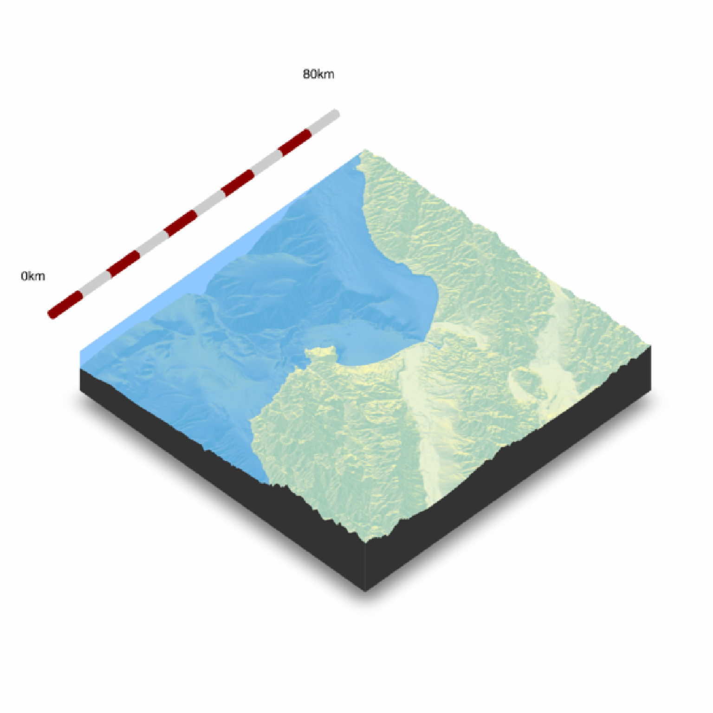
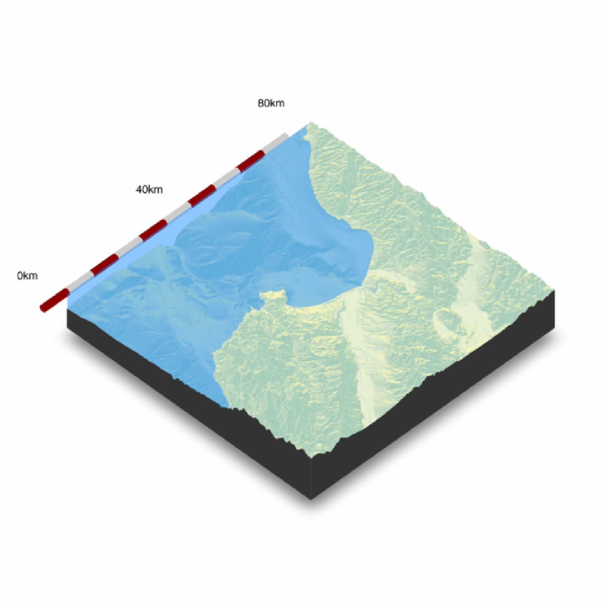
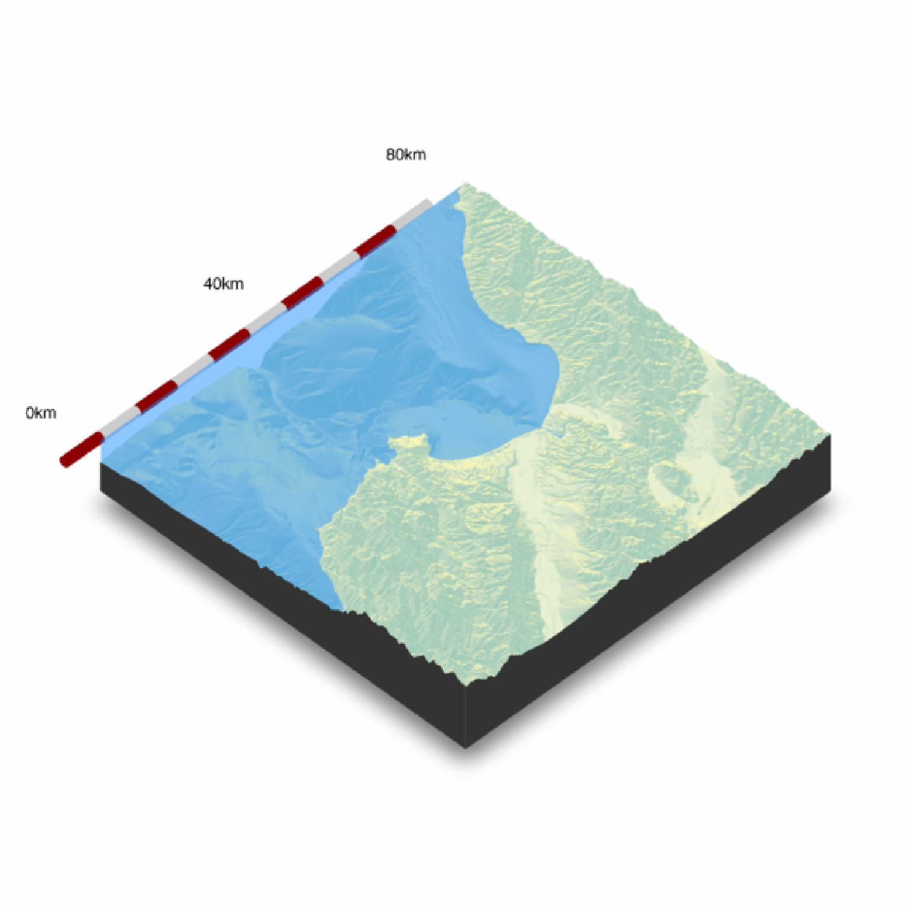

Places a scale bar on the map in 3D.
render_scalebar(
limits,
position = "W",
y = NULL,
segments = 10,
scale_length = 1,
label_unit = "",
offset = NULL,
radius = NULL,
color_first = "darkred",
color_second = "grey80",
color_text = "black",
text_switch_side = FALSE,
text_x_offset = 0,
text_y_offset = 0,
text_z_offset = 0,
clear_scalebar = FALSE
)Arguments
- limits
The distance represented by the scale bar. If a numeric vector greater than length 1, this will specify the breaks along the scale bar to place labels, with the maximum value in limits assumed to be the last label. Must be non-negative.
- position
Default `W`. A string representing a direction. Can be `N`, `E`, `S`, and `W`.
- y
Default `NULL`. The height of the scale bar, automatically calculated if `NULL`.
- segments
Default `10`. Number of colored segments in the scalebar.
- scale_length
Default `1`. Length of the scale bar, relative to the side of the map specified in `position`. If a length-2 vector, the first number specifies the start and stop points along the side.
- label_unit
Default `NULL`. The distance unit for the label.
- offset
Default `NULL`. The distance away from the edge to place the scale bar. If `NULL`, automatically calculated.
- radius
Default `NULL`. The radius of the cylinder representing the scale bar. If `NULL`, automatically calculated.
- color_first
Default `darkred`. Primary color in the scale bar.
- color_second
Default `grey90`. Seconary color in the scale bar.
- color_text
Default `black`. Color of the text.
- text_switch_side
Default `FALSE`. Switches the order of the text.
- text_x_offset
Default `0`. Distance offset for text in the x direction.
- text_y_offset
Default `0`. Distance offset for text in the y direction.
- text_z_offset
Default `0`. Distance offset for text in the z direction.
- clear_scalebar
Default `FALSE`. Clears the scale bar(s) on the map.
Value
Displays snapshot of current rgl plot (or saves to disk).
Examples
#Add a scale bar to the montereybay dataset, here representing about 80km
if(rayshader:::run_documentation()) {
montereybay %>%
sphere_shade() %>%
plot_3d(montereybay,theta=45, water=TRUE)
render_scalebar(limits=c(0, 80), label_unit = "km")
render_snapshot()
}
#> `montereybay` dataset used with no zscale--setting `zscale=50`. For a realistic depiction, raise `zscale` to 200.

if(rayshader:::run_documentation()) {
#This function works with `render_highquality()`
render_highquality(lightdirection=250, lightaltitude=40, scale_text_size=24,clamp_value=10)
render_scalebar(clear_scalebar = TRUE)
}
 if(rayshader:::run_documentation()) {
#We can change the position by specifying a cardinal direction to `position`, and the
#color by setting `color_first` and `color_second`
render_scalebar(limits=c(0,80), label_unit = "km", position = "N",
color_first = "darkgreen", color_second = "lightgreen")
render_snapshot()
render_scalebar(clear_scalebar = TRUE)
}
if(rayshader:::run_documentation()) {
#We can change the position by specifying a cardinal direction to `position`, and the
#color by setting `color_first` and `color_second`
render_scalebar(limits=c(0,80), label_unit = "km", position = "N",
color_first = "darkgreen", color_second = "lightgreen")
render_snapshot()
render_scalebar(clear_scalebar = TRUE)
}
 if(rayshader:::run_documentation()) {
#And switch the orientation by setting `text_switch_side = TRUE`
render_scalebar(limits=c(0,80), label_unit = "km", position = "N", text_switch_side = TRUE,
color_first = "darkgreen", color_second = "lightgreen")
render_snapshot()
render_scalebar(clear_scalebar = TRUE)
}
if(rayshader:::run_documentation()) {
#And switch the orientation by setting `text_switch_side = TRUE`
render_scalebar(limits=c(0,80), label_unit = "km", position = "N", text_switch_side = TRUE,
color_first = "darkgreen", color_second = "lightgreen")
render_snapshot()
render_scalebar(clear_scalebar = TRUE)
}
 if(rayshader:::run_documentation()) {
#We can add additional breaks by specifying additional distances in `limits`
render_scalebar(limits=c(0,40,80), label_unit = "km")
render_snapshot()
render_scalebar(clear_scalebar = TRUE)
}
if(rayshader:::run_documentation()) {
#We can add additional breaks by specifying additional distances in `limits`
render_scalebar(limits=c(0,40,80), label_unit = "km")
render_snapshot()
render_scalebar(clear_scalebar = TRUE)
}
 if(rayshader:::run_documentation()) {
#We can also manually specify the height by setting the `y` argument:
render_scalebar(limits=c(0,40,80), y=-70, label_unit = "km")
render_snapshot()
render_scalebar(clear_scalebar = TRUE)
}

if(rayshader:::run_documentation()) {
#Here we change the total size by specifying a start and end point along the side,
#and set the number of colored `segments`:
render_scalebar(limits=c(0,20, 40), segments = 4, scale_length = c(0.5,1), label_unit = "km")
render_scalebar(limits=c(0,20, 40), segments = 4, position = "N", text_switch_side = TRUE,
scale_length = c(0.25,0.75), label_unit = "km")
render_snapshot()
render_scalebar(clear_scalebar = TRUE)
}
if(rayshader:::run_documentation()) {
#We can also manually specify the height by setting the `y` argument:
render_scalebar(limits=c(0,40,80), y=-70, label_unit = "km")
render_snapshot()
render_scalebar(clear_scalebar = TRUE)
}

if(rayshader:::run_documentation()) {
#Here we change the total size by specifying a start and end point along the side,
#and set the number of colored `segments`:
render_scalebar(limits=c(0,20, 40), segments = 4, scale_length = c(0.5,1), label_unit = "km")
render_scalebar(limits=c(0,20, 40), segments = 4, position = "N", text_switch_side = TRUE,
scale_length = c(0.25,0.75), label_unit = "km")
render_snapshot()
render_scalebar(clear_scalebar = TRUE)
}
 if(rayshader:::run_documentation()) {
#Change the radius of the scale bar with `radius`. Here, the autopositioning doesn't work well with
#the labels, so we provide additional offsets with `text_y_offset` and `text_x_offset` to fix it.
render_scalebar(limits=c(0,20, 40), segments = 4, scale_length = c(0.5,1),
label_unit = "km", radius=10,text_y_offset=-20,text_x_offset=20)
render_snapshot(clear=TRUE)
}
if(rayshader:::run_documentation()) {
#Change the radius of the scale bar with `radius`. Here, the autopositioning doesn't work well with
#the labels, so we provide additional offsets with `text_y_offset` and `text_x_offset` to fix it.
render_scalebar(limits=c(0,20, 40), segments = 4, scale_length = c(0.5,1),
label_unit = "km", radius=10,text_y_offset=-20,text_x_offset=20)
render_snapshot(clear=TRUE)
}